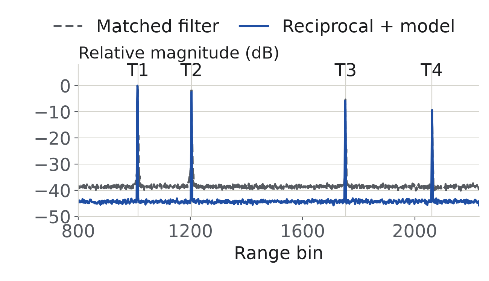

We had seven HDF5 files and four targets to find. The files contained an OFDM signal (the same kind of signal Wi-Fi uses) recorded before and after it went through a gallium nitride power amplifier. The organisers used the measured output to generate echoes from four simulated targets. Our job was to make the weak ones easier to see.
We worked on this as a team of three at the University of Oulu (Dimuthu Lesthuruge, Aprotim Paul and Ahmed Jabir Zuhayr). When we made the final, Paul and I flew to London in October to present our work at the European Microwave Week student design competition.
Say we send a signal x and record the return r. We can slide a copy of x along the recording and see where it lines up. At each shift k, we multiply each received sample by the conjugate of the corresponding transmit sample and add up the products. That’s the matched filter.
A peak in the magnitude of z tells us the echo’s delay. Multiplying that delay by the speed of light, then dividing by two for the trip out and back. There’s a catch. Even a single echo produces small peaks on either side of the main one. These are called sidelobes. When a strong echo’s sidelobes get as tall as a weak echo, it’s hard to tell the weak echo from the ripples.

We expected the amplifier to flatten the peaks at high input power. The challenge had “real PA nonlinearities” in its name, after all. We went through the recordings, and in most of them the compression was mild. So unfortunately for us, “The dataset was mostly linear… :)”
We fitted a 64-tap linear response G using the amplifier recordings, with coefficients for each bandwidth and input power. If X is the clean transmit spectrum, this gives us a reference R that accounts for what the amplifier does at each frequency f.
The echoes contain the waveform after amplification, so R is the shape we want to use as our reference. We had recordings of the amplifier, so the correction had to happen at the receiver.
We worked on a filter to reduce the total energy in the sidelobes. We also tested how far we could push down the tallest sidelobe. For that, we used a reciprocal filter. The idea is to divide the received spectrum by the transmit reference, with a safeguard where the reference is small. We could run the same filter with the clean signal, the model’s prediction, or the measured amplifier output as the reference.
We ran the comparison on held-out frames across 133 combinations of bandwidth and input power. For each one, we measured how far the strongest target peak stood above the tallest sidelobe. That’s the peak-to-sidelobe ratio, or PSLR.
Look at the first two bars. Just changing the filter got us from 15.76 to 28.29 dB. The amplifier model added another 1.84 dB, leaving a 0.27 dB gap to using the measured output directly. We’d expected the amplifier model to do a lot more of the work.
The model knocked down the highest sidelobe. If you add up the energy in all the sidelobes, though, there was more of it than with the clean-reference reciprocal filter. That second measure was what our filter was designed around.
We’re used to Oulu, where rush hour means waiting forty seconds at a crosswalk. By day three in London, the Elizabeth line and the DLR felt routine. We were tapping in without looking and debugging slides on the train.
At ExCeL, the things we draw as blocks on a whiteboard were just sitting on tables. Vector network analysers, waveguide benches, mmWave probes. The two of us were in the first year of our master’s. Some of the people at those tables had spent twenty years on problems we’d only seen in a footnote.
On Friday morning, we opened our talk with Oulu’s Air Guitar World Championships. The line about it being hard to predistort an HDF5 file got an actual laugh. We didn’t win. We liked seeing what the winning team had done with the same files. They’d designed their receiver with real-time use in mind, which was a different way into the problem.
Once the conference was over, Paul and I took a train out to Bletchley Park, as an engineering student does. After a week of GHz hardware and 6G demos in an exhibition hall, it was nice to spend some time in those quiet wartime huts.
At Bletchley Park during world war II, before anyone could get to the cryptanalysis, somebody had to pick those signals out of the air in the first place. After weeks of staring at recordings from one amplifier, it was easy to appreciate that part of the job.